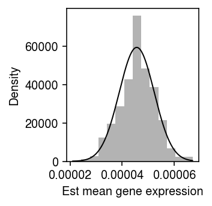

An improved voom transform for scRNA-seq data
Table of Contents
Introduction
The key idea of limma-voom (Law et al. 2014) is to transform a count matrix generated by RNA-seq (whether bulk or single cell) into two matrices, representing the mean and variance of true (log) gene expression. (This interpretation explains why they did not just use the sampling variance of the log mean estimate.) These matrices can then be analyzed using (heteroscedastic) Gaussian methods. However, limma-voom was developed before the development of scRNA-seq, and therefore before it was possible to measure the variance of gene expression between cells from a single donor. To address this limitation, Law et al. instead proposed to pool information across both donors and genes, estimating a LOESS trend between the mean and variance of true gene expression values across donors. \( \DeclareMathOperator\E{E} \DeclareMathOperator\Gam{Gamma} \DeclareMathOperator\Poi{Poisson} \DeclareMathOperator\V{V} \DeclareMathOperator\digamma{\psi} \DeclareMathOperator\trigamma{\psi^{(1)}} \newcommand\vb{\mathbf{b}} \newcommand\vc{\mathbf{c}} \newcommand\xiplus{x_{i+}} \)
Now suppose we have observed scRNA-seq data \(x_{ij}\), where \(x_{ij}\) denotes the number of molecules from gene \(j\) observed in cell \(i\). Then, we can estimate a point mass expression model for the cells from each donor \(k\) (Sarkar and Stephens 2020)
\begin{align} x_{ij} \mid \xiplus, \theta_j &\sim \Poi(\xiplus \exp(\theta_j))\\ \ell \triangleq \sum_i \ln p(x_{ij} \mid \xiplus, \theta_j) &= \sum_i x_{ij} (\ln \xiplus + \theta_j) - \xiplus \exp(\theta_j) + \mathrm{const}\\ \frac{\partial \ell}{\partial \theta_j} &= \sum_i x_{ij} - \xiplus \exp(\theta_j)\\ \theta_j &= \ln\left(\frac{\sum_i x_{ij}}{\sum_i \xiplus}\right)\\ \end{align}where \(\xiplus \triangleq \sum_j x_{ij}\). But, this approach is equivalent to constructing pseudobulk data \(y_{kj} \triangleq \sum_i x_{ij} z_{ik}\), where \(z_{ik}\) indicates whether cell \(i\) came from donor \(k\), and using \(\ln(y_{kj} / y_{k+})\) as the estimated mean of true log gene expression, where \(y_{k+} \triangleq \sum_j y_{kj}\). This simple theoretical argument and empirical studies have demonstrated that applying limma-voom to \([y_{kj}]\) is reasonable (Soneson and Robinson 2018, Hsiao 2019). However, the relationship between the voom-estimated variance and the true gene expression variance is unclear, because the variance used by voom is between individuals, not within an individual. Further, it is unlikely that a point mass expression model will be supported by the data.
We previously developed a method to efficiently estimate more complex expression models in large-scale scRNA-seq data sets (Sarkar et al. 2019). Here, we use that method to investigate two new possibilities for a precision weight derived from fitted expression models: (1) the inverse squared standard error of a point mass model, or (2) the inverse variance of the log true expression under a Gamma model. Specifically, we ask whether these alterantive approaches improve the power or robustness of DE analysis in scRNA-seq data.
Setup
import anndata import numpy as np import mpebpm import pandas as pd import scanpy as sc import rpy2.robjects.packages import rpy2.robjects.pandas2ri import scipy.special as sp import scipy.sparse as ss import scipy.stats as st import sqlite3 rpy2.robjects.pandas2ri.activate()
%matplotlib inline %config InlineBackend.figure_formats = set(['retina'])
import matplotlib.pyplot as plt plt.rcParams['figure.facecolor'] = 'w' plt.rcParams['font.family'] = 'Nimbus Sans'
Methods
Standard error of point mass expression model
The standard error of \(\hat\theta_j\) is analytic
\begin{align} \frac{\partial^2 \ell}{\partial \theta_j^2} &= -\sum_i \xiplus \exp(\theta_j)\\ \mathcal{I}(\mu_j) &= -\E\left[\frac{\partial^2 \ell}{\partial \mu_j^2}\right] = \sum_i \xiplus \exp(\theta_j)\\ s_j^2 &= \frac{1}{\sum_i \xiplus \exp(\theta_j)}, \end{align}where we have treated \(\xiplus\) as fixed. This treatment is justified by the fact that the Poisson measurement model for each gene arises from a Multinomial measurement model for all genes jointly, in which the total number of molecules observed is fixed rather than a sum of random variables. As an illustrative example, plot the bootstrap distribution of the \(\hat\theta_j\) against a normal density with mean \(\theta_j\) and variance \(s_j^2\) for a simple simulation.
rng = np.random.default_rng(1) n_trials = 1000 n = 100 s = 1e4 theta = -10 thetahat = [] for i in range(n_trials): x = rng.poisson(s * np.exp(theta), size=n) thetahat.append(np.log(x.sum()) - np.log(n) - np.log(s)) thetahat = np.array(thetahat)
plt.clf() plt.gcf().set_size_inches(2.5, 2.5) plt.hist(thetahat, bins=16, density=True, color='0.7') grid = np.linspace(thetahat.min(), thetahat.max(), 1000) plt.plot(grid, st.norm(loc=theta, scale=np.sqrt(1 / (np.exp(theta) * n * s))).pdf(grid), lw=1, c='k') plt.xlabel('Est ln mean gene expression') plt.ylabel('Density') plt.tight_layout()

After introducing multiplicative effects \(\vb_j\) for observed technical covariates \(\vc_i\) into the measurement model
\begin{equation} x_{ij} \mid \xiplus, \vc_i, \vb_j, \theta_j \sim \Poi(\xiplus \exp(\vc_i' \vb_j + \theta_j)), \end{equation}the standard error of \(\hat\theta_j\) also depends on \(\vc_i'\vb_j\). In contrast, if we assume the identity link
\begin{align} x_{ij} \mid \xiplus, \mu_j &\sim \Poi(\xiplus \mu_j)\\ \ell \triangleq \sum_i \ln p(x_{ij} \mid \xiplus, \mu_j) &= \sum_i x_{ij} \ln(\xiplus \mu_j) - \xiplus \mu_j + \mathrm{const}\\ \frac{\partial \ell}{\partial \mu_j} &= \sum_i \frac{x_{ij}}{\mu_j} - \xiplus\\ \hat\mu_j &= \frac{\sum_i x_{ij}}{\sum_i \xiplus}\\ \frac{\partial^2 \ell}{\partial \mu_j^2} &= -\sum_i \frac{x_{ij}}{\mu_j^2}\\ \mathcal{I}(\mu_j) &= -\E\left[\frac{\partial^2 \ell}{\partial \mu_j^2}\right] = \frac{\E[\sum_i x_{ij}]}{\mu_j^2} = \frac{\sum_i \xiplus}{\mu_j}\\ s_j^2 &= \frac{\mu_j}{\sum_i \xiplus}, \end{align}where we have used the fact that \(\sum_i x_{ij} \sim \Poi(\mu_j \sum_i \xiplus)\). Surprisingly, \(\ln \hat\mu_j = \hat\theta_j\), the standard error of \(\hat\mu_j\) increases as \(\mu_j\) increases, and the standard error does not depend on technical covariates or their effects. As a sanity check, plot the bootstrap distribution of \(\hat\mu_j\) against a normal density with mean \(\theta_j\) and variance \(s_j^2\) for a simple simulation.
rng = np.random.default_rng(2) n_trials = 500 n = 100 s = 1e4 log_mu = -10 muhat = [] for i in range(n_trials): x = rng.poisson(s * np.exp(log_mu), size=n) muhat.append(x.sum() / (n * s)) muhat = np.array(muhat)
plt.clf() plt.gcf().set_size_inches(2.5, 2.5) plt.hist(muhat, bins=14, density=True, color='0.7') grid = np.linspace(muhat.min(), muhat.max(), 1000) plt.plot(grid, st.norm(loc=muhat.mean(), scale=np.sqrt(muhat[0] / (n * s))).pdf(grid), lw=1, c='k') plt.xlabel('Est mean gene expression') plt.ylabel('Density') plt.tight_layout()

Variance of Gamma expression model
Assuming a Gamma expression model
\begin{align} \lambda_{ij} &\sim \Gam(\phi_j^{-1}, \mu_j^{-1} \phi_j^{-1})\\ \E[\ln \lambda_{ij}] &= \digamma(\phi_j^{-1}) + \ln(\mu_j \phi_j)\\ \V[\ln \lambda_{ij}] &= \trigamma(\phi_j^{-1}), \end{align}where the Gamma distribution is parameterized by shape and rate, \(\digamma(\cdot)\) denotes the digamma function, and \(\trigamma(\cdot)\) denotes the trigamma function. We previously noted that robustly estimating \(\phi_j\) is difficult, even from hundreds of cells per condition; despite this difficulty, our method can still accurately estimate the variance of true gene expression.
Improved limma
Given transformed data and standard errors, DE analysis is performed in two steps:
- Estimate the effect of the covariate of interest by GLS
- Estimate moderated test statistics and \(p\)-values by EB treatment of the standard errors from (1)
Lu and Stephens 2019 describe a more powerful approach to solve (2).
Simulation
Implement a simplified DSC.
def simulate_null(dat, n_donors=2, n_cells=100, to_dense=False, min_counts=1, seed=0): """Return counts and labels counts - matrix [n_donors * n_cells, n_genes] labels - CSR matrix [n_donors * n_cells, n_donors] """ query = sc.pp.subsample(dat, n_obs=n_donors * n_cells, random_state=seed, copy=True) sc.pp.filter_genes(query, min_counts=min_counts) onehot = ss.coo_matrix((np.ones(query.shape[0]), (np.arange(query.shape[0]), np.repeat(np.arange(n_donors), n_cells)))).tocsr() if to_dense: return query.X.A, onehot.A else: return query.X, onehot def estimate_limma_voom(x, onehot): """Return DataFrame of bhat, se""" limma = rpy2.robjects.packages.importr('limma') # Important: limma expects genes x samples y = limma.voom(x.T @ onehot) fit = limma.lmFit(y, np.hstack([np.arange(2), np.ones(2)]).reshape(2, -1)) return fit def fit_wls(x, y, w): """Return DataFrame of bhat, se x - array-like (n, 1) y - array-like (n, p) w - array-like (n, p) """ result = [] for j in range(y.shape[1]): wx = np.diag(np.sqrt(w[:,j])) @ x wy = np.diag(np.sqrt(w[:,j])) @ y[:,j] bhat = np.linalg.pinv(wx) @ wy se = 1 / (wx.T @ wx) result.append((bhat[0], se[0,0])) result = pd.DataFrame(result, columns=['bhat', 's2']) return result def estimate_wls_point(x, onehot): """Return DataFrame of bhat, se Instead of voom, estimate θ_j = log μ_j under a point mass expression model and its sampling variance, and use those as input to WLS. """ s = x.sum(axis=1, keepdims=True) log_mean = mpebpm.sgd.ebpm_point(x, s=s, onehot=onehot) # [n_donors, n_genes] w = np.exp(log_mean) * (onehot.T @ s) return fit_wls(np.hstack([np.arange(2), np.ones(2)]).reshape(2, -1), log_mean, w) def estimate_wls_gamma(x, onehot, lr=1e-2, num_epochs=40, batch_size=64, shuffle=True): """Return DataFrame of bhat, se Instead of voom, estimate E[log λ_{ij}] and V[log λ_{ij}] under a Gamma model, and use those as input to WLS. """ s = x.sum(axis=1, keepdims=True) log_mean, log_inv_disp = mpebpm.ebpm_gamma( x, s=s, onehot=onehot, lr=lr, num_epochs=num_epochs, batch_size=batch_size, shuffle=shuffle) # [n_donors, n_genes] m = sp.digamma(np.exp(log_inv_disp)) + log_mean - log_inv_disp w = 1 / sp.polygamma(1, np.exp(log_inv_disp)) return fit_wls(np.hstack([np.arange(2), np.ones(2)]).reshape(2, -1), m, w) def estimate_moderated_t(bhat, s2): limma = rpy2.packages.importr('limma') raise NotImplementedError # return limma.eBayes() def estimate_ebtm(bhat, s2): ashr = rpy2.packages.importr('ashr')
Results
Type 1 error rate
To generate null data, randomly sample cells from a homogeneous population, and randomly assign labels.
Power
To generate true positives, randomly sample cells from a homogeneous population, randomly assign labels, and then use binomial thinning (Gerard 2019) to introduce effects of a given magnitude.